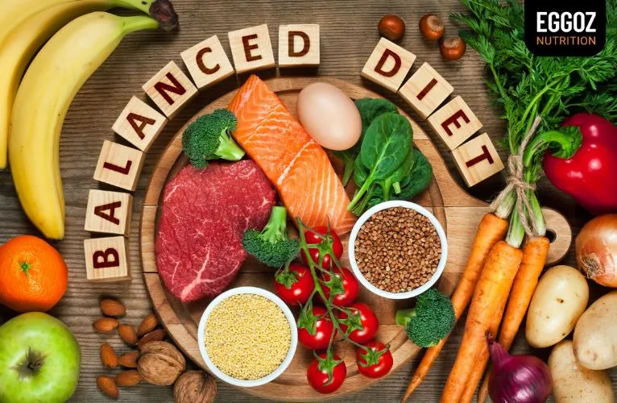

Healthy Diet
WHO/V. Gupta-Smith

Key Facts
- A healthy diet helps to protect against malnutrition in all its forms, as well as noncommunicable diseases (NCDs), including diabetes, heart disease, stroke and cancer.
- Unhealthy diet and lack of physical activity are leading global risks to health.
- Healthy dietary practices start early in life – breastfeeding fosters healthy growth and improves cognitive development, and may have longer term health benefits such as reducing the risk of becoming overweight or obese and developing NCDs later in life.
- Energy intake (calories) should be in balance with energy expenditure. To avoid unhealthy weight gain, total fat should not exceed 30% of total energy intake (1, 2, 3). Intake of saturated fats should be less than 10% of total energy intake, and intake of trans-fats less than 1% of total energy intake, with a shift in fat consumption away from saturated fats and trans-fats to unsaturated fats (3), and towards the goal of eliminating industrially-produced trans-fats (4, 5, 6).
- Limiting intake of free sugars to less than 10% of total energy intake (2, 7) is part of a healthy diet. A further reduction to less than 5% of total energy intake is suggested for additional health benefits (7).
- Keeping salt intake to less than 5 g per day (equivalent to sodium intake of less than 2 g per day) helps to prevent hypertension, and reduces the risk of heart disease and stroke in the adult population (8).
- WHO Member States have agreed to reduce the global population’s intake of salt by 30% by 2025; they have also agreed to halt the rise in diabetes and obesity in adults and adolescents as well as in childhood overweight by 2025 (9, 10).
Overview
Consuming a healthy diet throughout the life-course helps to prevent malnutrition in all its forms as well as a range of noncommunicable diseases (NCDs) and conditions. However, increased production of processed foods, rapid urbanization and changing lifestyles have led to a shift in dietary patterns. People are now consuming more foods high in energy, fats, free sugars and salt/sodium, and many people do not eat enough fruit, vegetables and other dietary fibre such as whole grains.
The exact make-up of a diversified, balanced and healthy diet will vary depending on individual characteristics (e.g. age, gender, lifestyle and degree of physical activity), cultural context, locally available foods and dietary customs. However, the basic principles of what constitutes a healthy diet remain the same.
For Adults
A healthy diet includes the following:
- Fruit, vegetables, legumes (e.g. lentils and beans), nuts and whole grains (e.g. unprocessed maize, millet, oats, wheat and brown rice).
- At least 400 g (i.e. five portions) of fruit and vegetables per day (2), excluding potatoes, sweet potatoes, cassava and other starchy roots.
- Less than 10% of total energy intake from free sugars (2, 7), which is equivalent to 50 g (or about 12 level teaspoons) for a person of healthy body weight consuming about 2000 calories per day, but ideally is less than 5% of total energy intake for additional health benefits (7). Free sugars are all sugars added to foods or drinks by the manufacturer, cook or consumer, as well as sugars naturally present in honey, syrups, fruit juices and fruit juice concentrates.
- Less than 30% of total energy intake from fats (1, 2, 3). Unsaturated fats (found in fish, avocado and nuts, and in sunflower, soybean, canola and olive oils) are preferable to saturated fats (found in fatty meat, butter, palm and coconut oil, cream, cheese, ghee and lard) and trans-fats of all kinds, including both industrially-produced trans-fats (found in baked and fried foods, and pre-packaged snacks and foods, such as frozen pizza, pies, cookies, biscuits, wafers, and cooking oils and spreads) and ruminant trans-fats (found in meat and dairy foods from ruminant animals, such as cows, sheep, goats and camels). It is suggested that the intake of saturated fats be reduced to less than 10% of total energy intake and trans-fats to less than 1% of total energy intake (5). In particular, industrially-produced trans-fats are not part of a healthy diet and should be avoided (4, 6).
- Less than 5 g of salt (equivalent to about one teaspoon) per day (8). Salt should be iodized.
For infants and young children
In the first 2 years of a child’s life, optimal nutrition fosters healthy growth and improves cognitive development. It also reduces the risk of becoming overweight or obese and developing NCDs later in life.
Advice on a healthy diet for infants and children is similar to that for adults, but the following elements are also important:
- Infants should be breastfed exclusively during the first 6 months of life.
- Infants should be breastfed continuously until 2 years of age and beyond
- From 6 months of age, breast milk should be complemented with a variety of adequate, safe and nutrient-dense foods. Salt and sugars should not be added to complementary foods.
Practical advice on maintaining a healthy diet
Fruit and vegetables
Eating at least 400 g, or five portions, of fruit and vegetables per day reduces the risk of NCDs (2) and helps to ensure an adequate daily intake of dietary fibre.
- always including vegetables in meals;
- eating fresh fruit and raw vegetables as snacks;
- eating fresh fruit and vegetables that are in season; and
- always including vegetables in meals;
Fats
Reducing the amount of total fat intake to less than 30% of total energy intake helps to prevent unhealthy weight gain in the adult population (1, 2, 3). Also, the risk of developing NCDs is lowered by:
- reducing saturated fats to less than 10% of total energy intake;
- reducing trans-fats to less than 1% of total energy intake; and
- replacing both saturated fats and trans-fats with unsaturated fats (2, 3) – in particular, with polyunsaturated fats.
Fat intake, especially saturated fat and industrially-produced trans-fat intake, can be reduced by:
- steaming or boiling instead of frying when cooking;
- replacing butter, lard and ghee with oils rich in polyunsaturated fats, such as soybean, canola (rapeseed), corn, safflower and sunflower oils;
- eating reduced-fat dairy foods and lean meats, or trimming visible fat from meat; and
- limiting the consumption of baked and fried foods, and pre-packaged snacks and foods (e.g. doughnuts, cakes, pies, cookies, biscuits and wafers) that contain industrially-produced trans-fats.
Salt, sodium and potassium
Most people consume too much sodium through salt (corresponding to consuming an average of 9–12 g of salt per day) and not enough potassium (less than 3.5 g). High sodium intake and insufficient potassium intake contribute to high blood pressure, which in turn increases the risk of heart disease and stroke (8, 11).
Reducing salt intake to the recommended level of less than 5 g per day could prevent 1.7 million deaths each year (12).
People are often unaware of the amount of salt they consume. In many countries, most salt comes from processed foods (e.g. ready meals; processed meats such as bacon, ham and salami; cheese; and salty snacks) or from foods consumed frequently in large amounts (e.g. bread). Salt is also added to foods during cooking (e.g. bouillon, stock cubes, soy sauce and fish sauce) or at the point of consumption (e.g. table salt).
Salt intake can be reduced by:
- limiting the amount of salt and high-sodium condiments (e.g. soy sauce, fish sauce and bouillon) when cooking and preparing foods;
- not having salt or high-sodium sauces on the table;
- limiting the consumption of salty snacks; and
- choosing products with lower sodium content.
Some food manufacturers are reformulating recipes to reduce the sodium content of their products, and people should be encouraged to check nutrition labels to see how much sodium is in a product before purchasing or consuming it.
Potassium can mitigate the negative effects of elevated sodium consumption on blood pressure. Intake of potassium can be increased by consuming fresh fruit and vegetables.
Sugar
In both adults and children, the intake of free sugars should be reduced to less than 10% of total energy intake (2, 7). A reduction to less than 5% of total energy intake would provide additional health benefits (7).
Consuming free sugars increases the risk of dental caries (tooth decay). Excess calories from foods and drinks high in free sugars also contribute to unhealthy weight gain, which can lead to overweight and obesity. Recent evidence also shows that free sugars influence blood pressure and serum lipids, and suggests that a reduction in free sugars intake reduces risk factors for cardiovascular diseases (13).
Sugars intake can be reduced by:
- limiting the consumption of foods and drinks containing high amounts of sugars, such as sugary snacks, candies and sugar-sweetened beverages (i.e. all types of beverages containing free sugars – these include carbonated or non‐carbonated soft drinks, fruit or vegetable juices and drinks, liquid and powder concentrates, flavoured water, energy and sports drinks, ready‐to‐drink tea, ready‐to‐drink coffee and flavoured milk drinks); and
- eating fresh fruit and raw vegetables as snacks instead of sugary snacks.
How to promote healthy diets
Diet evolves over time, being influenced by many social and economic factors that interact in a complex manner to shape individual dietary patterns. These factors include income, food prices (which will affect the availability and affordability of healthy foods), individual preferences and beliefs, cultural traditions, and geographical and environmental aspects (including climate change). Therefore, promoting a healthy food environment – including food systems that promote a diversified, balanced and healthy diet – requires the involvement of multiple sectors and stakeholders, including government, and the public and private sectors.
Governments have a central role in creating a healthy food environment that enables people to adopt and maintain healthy dietary practices. Effective actions by policy-makers to create a healthy food environment include the following:
- Creating coherence in national policies and investment plans – including trade, food and agricultural policies – to promote a healthy diet and protect public health through:
- increasing incentives for producers and retailers to grow, use and sell fresh fruit and vegetables;
- reducing incentives for the food industry to continue or increase production of processed foods containing high levels of saturated fats, trans-fats, free sugars and salt/sodium;
- encouraging reformulation of food products to reduce the contents of saturated fats, trans-fats, free sugars and salt/sodium, with the goal of eliminating industrially-produced trans-fats;
- implementing the WHO recommendations on the marketing of foods and non-alcoholic beverages to children;
- establishing standards to foster healthy dietary practices through ensuring the availability of healthy, nutritious, safe and affordable foods in pre-schools, schools, other public institutions and the workplace;
- exploring regulatory and voluntary instruments (e.g. marketing regulations and nutrition labelling policies), and economic incentives or disincentives (e.g. taxation and subsidies) to promote a healthy diet; and
- encouraging transnational, national and local food services and catering outlets to improve the nutritional quality of their foods – ensuring the availability and affordability of healthy choices – and review portion sizes and pricing.
Back to Top